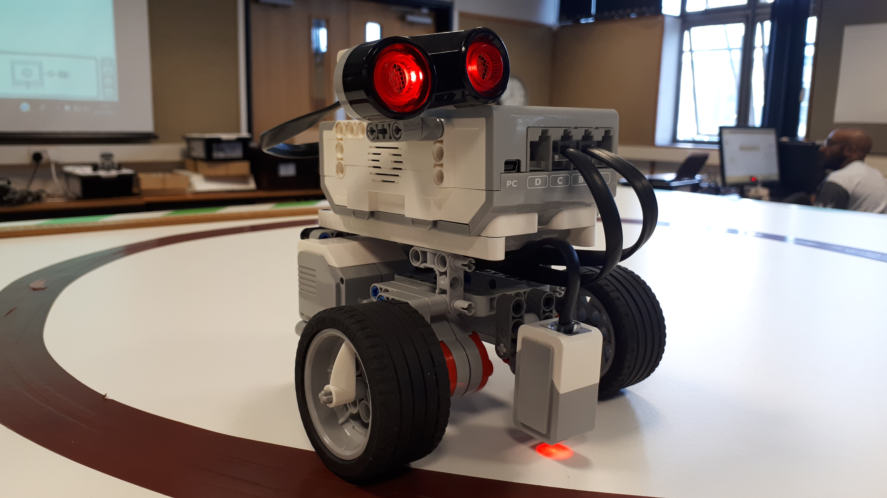
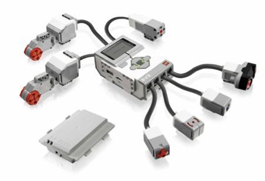

Introducing sensor-based navigation
Contents
1 The RoboLab sensors¶
In most of the activities we have completed to date, we have relied on the light sensor to provide sensory input to the robot control program.
In this notebook, we will review some of the other sensors that are available to us, including an ultrasonic distance sensor, a direction-revealing gyroscope and tachometer ‘sensor’ readings that are reported by the motors.
1.1 Available sensors¶
Recall from previous activities that the simulated robot is configured with a variety of sensors, including two downward-facing light sensors, an ultrasonic sensor and a gyroscope (gyro).
In this notebook, we will have a further look at how sensors are configured in the simulator.
By default, on the simulated robot the light sensors are located at the front, just to the left and right of the centreline, although we could configure them to be in different locations. The light sensors are also assumed to be facing downwards so that they detect the colour/brightness of the background. You have already explored how we might model raising and lowering the light sensor in a previous notebook.
The Lego Mindstorms EV3 ‘brick’, which inspired the original ev3devsim simulator from which the RoboLab nbev3desim simulator is derived, is a simple but otherwise typical robot control system: it has input and output ports to which different sensors and actuators can be connected:

The EV3 brick itself contains a microprocessor running Linux and a rechargeable battery pack, four input ports labelled 1 to 4 for connecting sensors, four output ports labelled A to D for connecting motor outputs, a grey on/off button, four cursor control buttons (up, down, left, right) surrounding a central select button, and a small display screen.

The control system needs to know what sensors and actuators are actually connected so that the input and output signals can be interpreted correctly.
Motors are configured relative to specified input ports, conventionally output ports B and C:
from ev3dev2.motor import OUTPUT_B, OUTPUT_C
The sensors are configured in a program by identifying the physical port they are connected to and the type of sensor they are:
from ev3dev2.sensor import INPUT_1, INPUT_2, INPUT_3, INPUT_4
from ev3dev2.sensor.lego import ColorSensor, GyroSensor, UltrasonicSensor
ultrasonic = UltrasonicSensor(INPUT_1)
colorLeft = ColorSensor(INPUT_2) <!-- JD: changed to colorLeft and INPUT_3 (which was a duplicate of the following line). -->
colorRight = ColorSensor(INPUT_3)
gyro = GyroSensor(INPUT_4)
To simplify configuration setting, the %sim_magic_imports and %sim_magic_preloaded magics load in port identifiers and motor and sensor objects respectively.
Load in the simulator and magics in the normal way:
from nbev3devsim.load_nbev3devwidget import roboSim, eds
%load_ext nbev3devsim
and then preview the full range of supplied definitions:
%sim_magic_preloaded --preview
Remember, you can always check exactly what code has been downloaded to the simulator by viewing the Code display panel using the toggle display button in the simulator, the simulator D keyboard shortcut, or the --code / -D magic switch.
1.1.2 Previewing sensor and motor objects¶
To see what attributes and methods are associated with each of the defined objects, we can use the Python dir() function that displays the structure of a Python object.
For example, we can view what’s on offer from the ultrasonic sensor:
%%sim_magic_preloaded -OHWR
# Show the contents of the ultrasonic object
print("Ultrasonic sensor:\n")
print(dir(ultrasonic))
print("\n\n")
We see that available options include .distance_centimeters and .distance_inches.
Let’s have a look at the light sensor:
%%sim_magic_preloaded -OHWR
# Show the contents of a light sensor object
print("Light sensor:\n")
print(dir(colorLeft))
print("\n\n")
We see that available options include things like color_name, full_reflected_light_intensity, separate red, green and blue components as well as the combined rgb value and the reflected_light_intensity and reflected_light_intensity_pc values we are familiar with.
Let’s look at one of the motor drives:
%%sim_magic_preloaded -OHWR
# Show the contents of a motor drive object
print("Tank drive:\n")
print(dir(tank_drive))
print("\n\n")
Here we see left_motor and right_motor elements, among others. Let’s look at one of those:
%%sim_magic_preloaded -OHWR
# Show the contents of a motor object
print("Tank turn - motor:\n")
print(dir(tank_turn.left_motor))
print("\n\n")
Here we see a range of attributes and settings, but the one that will most interest us is the .position value, which is a record of the number of tacho counts recorded by the motor.
Note that not all the components may be properly defined. (The package implementation is partial, although its API is relatively complete.)
1.1.3 Charting sensor data¶
To chart the sensor data using the live chart, we need to select the relevant trace in the simulator Chart panel and stream data in the correct form to it.
Sensor data is sent to the chart using print() messages of the form:
# Sensor display
## left light sensor:
print('Light_left: ' + str(colorLeft.reflected_light_intensity_pc))
# We can also use other
# reportable light sensor attributes
# right light sensor
print('Light_right: ' + str(colorLeft.reflected_light_intensity))
# We can also use other
# reportable light sensor attributes
# right light sensor colour
print('Colour: ' + str(colorLeft.color))
# Ultrasonic
print('Ultrasonic: ' + str(ultrasonic))
# Motor tachometry - depending on drive
print('Wheel_left: ' + str(tank_drive.left_motor.position))
print('Wheel_right: ' + str(str(tank_turn.right_motor.position)))
1.1.4 Activity – Testing the ultrasonic sensor¶
In this activity you will see how the ultrasonic sensor can be used in the simulator.
The robot will drive forward, at speed, until it observes an obstacle, at which point it will start to slow down.
Note that the ultrasonic sensor is mounted a little way back from the front edge of the robot, so we need to take that offset into account when deciding that the front of the robot is in contact with an obstacle.
The following code cell configures the simulator to use a blank background (-b Empty_Map) and a single obstacle (Central_post); the simulated robot is initially situated to near the mid-point of the left-hand edge of the simulator canvas (-x 100 -y 500) and ultrasonic rays are displayed (-u).
Open the chart display in the simulator and ensure the Ultrasonic trace option is selected.
Run the code cell to configure the simulator and download the program and then run the program in the simulator.
Observe what happens and record your observations, paying attention to both the behaviour of the robot and the measurements returned by the ultrasonic sensor in the output window and/or the live chart.
What happens if you initially locate the robot at -x 100 -y 450?
When you have observed what happens, closely read through the program. How does the code explain the behaviour of the robot?
Use this cell to record your observations of what happens when the program is run.
Annotate the program with comments to explain how it works.
%%sim_magic_preloaded -u -b Empty_Map -cC -o Central_post -x 100 -y 500
import time
ultrasonic = UltrasonicSensor(INPUT_1)
u = ultrasonic.distance_centimeters
print('Ultrasonic: ' + str(u))
time.sleep(1)
while u > 3:
u = ultrasonic.distance_centimeters
print('Ultrasonic: ' + str(u))
u = min(100, u)
left_motor_speed = SpeedPercent(u)
right_motor_speed = SpeedPercent(u)
tank_drive.on(left_motor_speed, right_motor_speed)
say("All done...")
Example discussion¶
Click the arrow on the left or run this cell to reveal an example discussion.
When the program is run, the robot remains stationary for a moment or two before driving forward at some speed. As the simulated robot approaches the obstacle, it starts to slow down, coming to stop as it reaches the obstacle.
Starting from the second location, the robot behaves in a similar way to the first run, but it doesn’t stop when it reaches the obstacle. Rather, it runs over the obstacle, slowly at first, then speeds up as it passes the obstacle.
It seems that as the robot does not get very close to the obstacle as measured by the ultrasonic sensor, it does not stop. Instead, it continues moving and as the obstacle gets further away, the robot speeds up.
Looking at the program, I have annotated it to describe what each line does and relate it to my observations of the robot’s behaviour:
# Import a package
import time
# Create a variable associated with the ultrasonic sensor
ultrasonic = UltrasonicSensor(INPUT_1)
# Read the distance measured by the sensor
u = ultrasonic.distance_centimeters
# Display the distance
print('Ultrasonic: ' + str(u))
# Pause for 1 second - this is the delay before the robot starts moving
time.sleep(1)
# The delay is actually to give the ultrasonic sensor time to start working
# If the distance is greater than three centimeters
while u > 3:
# Take the reading again
u = ultrasonic.distance_centimeters
# Display the reading
# This also provides the data for the chart trace
print('Ultrasonic: ' + str(u))
# Find the minimum value between the sensor reading and 100
u = min(100, u)
# Set the motor speeds relative to the distance
# so the closer the robot is to the obstacle,
# the slower it will go.
left_motor_speed = SpeedPercent(u)
right_motor_speed = SpeedPercent(u)
# Drive the robot at the desired speed
tank_drive.on(left_motor_speed, right_motor_speed)
# We're out of the whole loop, so the distance to the obstacle
# must be less than or equal to three centimeters
# And we're done... Print a message to announce the fact.
print("All done...")
The display of the distance measurement provided by the ultrasonic sensor shows an initial steep drop at the start of the chart as the sensor resets, and then a graceful decline as the robot moves towards the obstacle.
Even though the robot encounters the obstacle, the robot drives over the obstacle rather than being stopped by it. The simulator physics are obviously not so complicated that obstacles have any simulated ‘physical’ substance to them capable of impeding the progress of the robot.
1.2 Summary¶
In this notebook, we have reviewed the sensors that are available to use in the simulator, as well as how we might configure and refer to them using the boilerplate imports provided by the simulator magics.
You then experimented with the ultrasonic sensor to see how it can be used to control the behaviour of the robot when it perceives an obstacle.